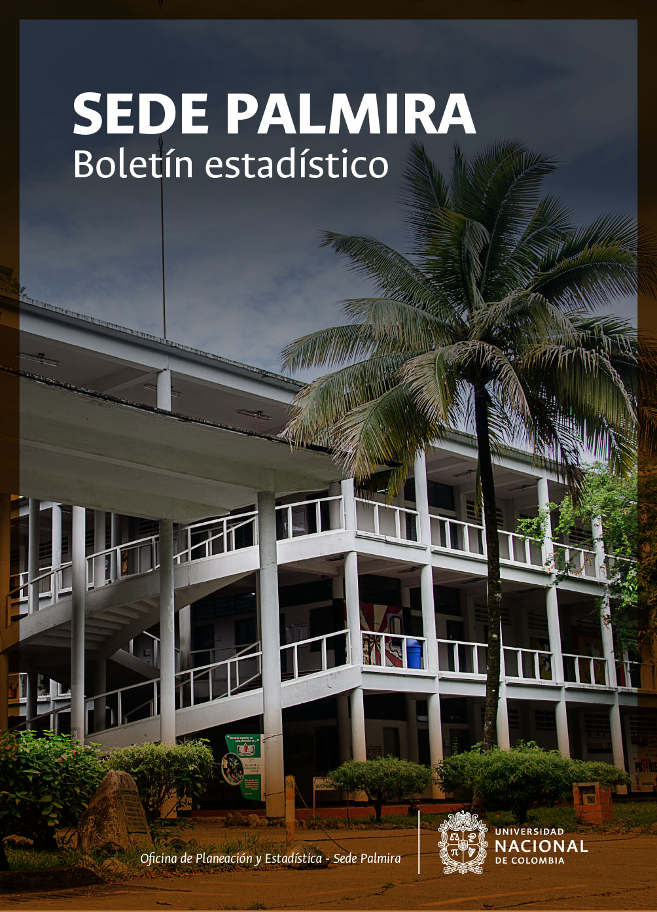

Boletin estadístico Sede Palmira
Portada
Comentarios, sugerencias e inquietudes
AAAA AAAA AAAA
Cargo:
Email: mail@unal.edu.co
Teléfono: (1) 3165000 extensión ____
Sistema Estadístico UNAL
El Boletín Estadísco de la Sede Palmira de la Universidad Nacional de Colombia hace parte integral del sistema estadístico institucional. Para aquellos interesados en conocer la información estadística general de la Universidad así como de las demás sedes que hacen parte de esta institución, los invitamos a ingresar al sitio web de estadísticas institucionales y a conocer los porqués de este sitio expresados en el siguiente video institucional.